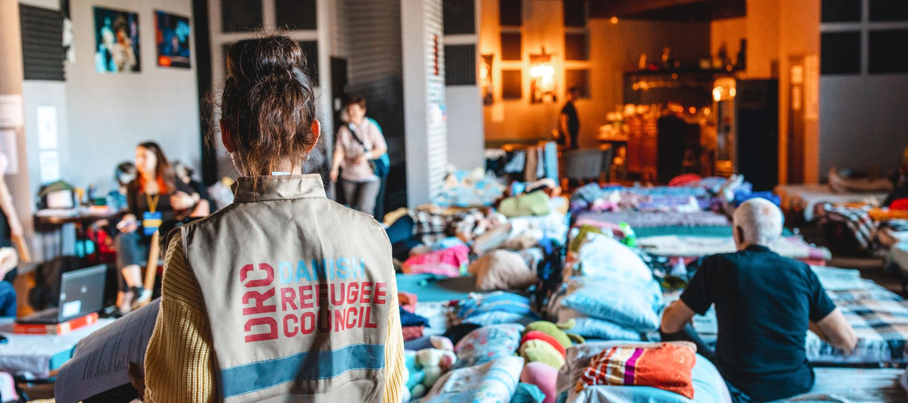
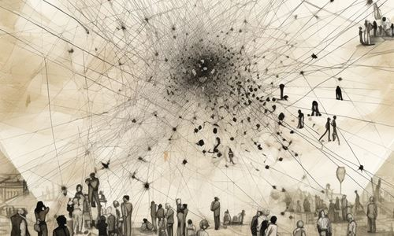
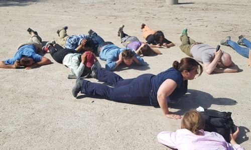
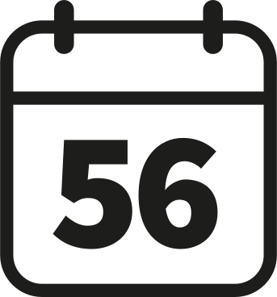
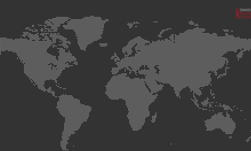
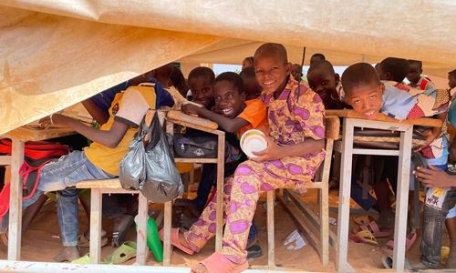
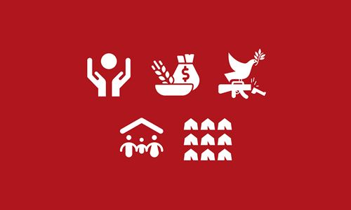
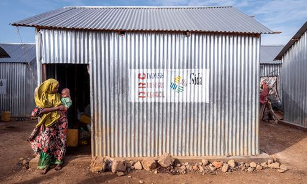

Since 1956
Helping refugees and other displaced people worldwide
News Helping refugees and other displaced people worldwide
29 Nov 2023
Focus on Religions: Launch of the Mixed Migration
Review 2023
29 Nov 2023
Ukraine: New windows and water supply-DRC
improves living conditions in western Ukraine shelters
for IDPs
Ukraine: New windows and water supply-DRC
improves living conditions in western Ukraine shelters
for IDPs
27 Nov 2023
Monica Orach-DRC protecion officer in South Sudan
Monica Orach-DRC protecion officer in South Sudan
Foresight:Displacement forecasts
Read more
Read more
 Climate & environment action
Climate & environment action Read more
 Mixed Migration Centre
Mixed Migration Centre Read more
Safety trainings br Read more
Since 1956
DRC Danish Refugee Council has helped refugees and displaced people for more than 60 years.
DRC Danish Refugee Council has helped refugees and displaced people for more than 60 years.
World leading NGO
DRC Danish Refugee Council countinously ranks as one of the best NGOs in the world.
DRC Danish Refugee Council countinously ranks as one of the best NGOs in the world.
Worldwild impact
DRC Danish Refugee Council helps refugees and diplaced people in the whole world.
DRC Danish Refugee Council helps refugees and diplaced people in the whole world.
Where We Work
DRC Danish Refugee Council is currently working in 40 countries around the world.
Spin the globe, click on the dots and read more about our work for refugees and other displaced people around the world.
DRC Danish Refugee Council is currently working in 40 countries around the world.
Spin the globe, click on the dots and read more about our work for refugees and other displaced people around the world.
Europe | Asia | Middle East | West & North Africa | East Africa & Great Lakes | Americas
About our work
Where we work
Read more
Read more
Strategy 2025
Read more
Read more
Core sectors
Read more
Read more
About us
Read more
Read more
People flee when they fear for their lives. We assist refugees and the displaced, protect their rights and empower them towards a better future.
/ Charlotte Slente, Secretary General of the Danish Refugee Council
/ Charlotte Slente, Secretary General of the Danish Refugee Council